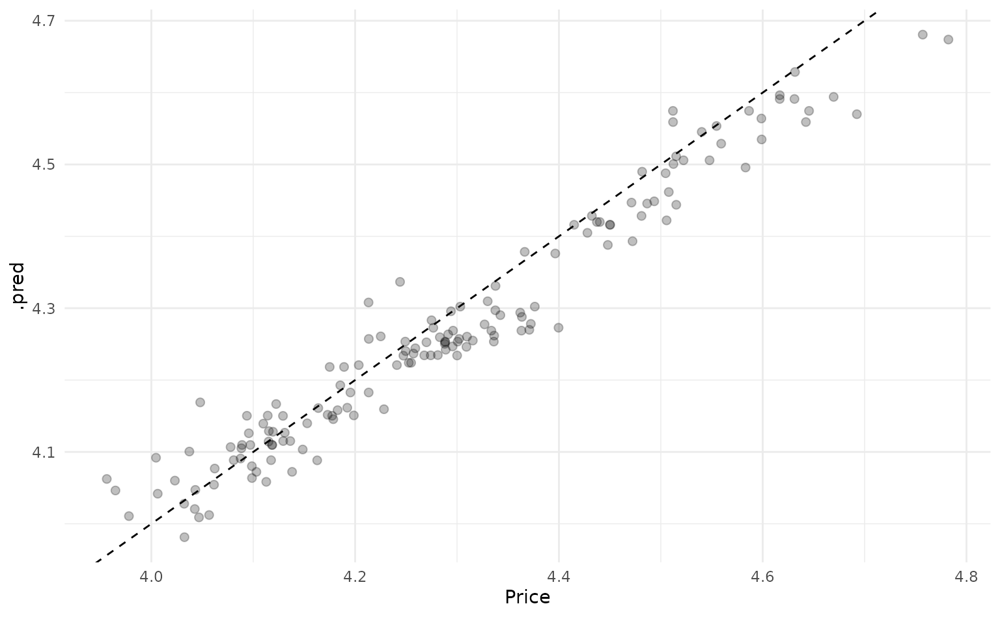
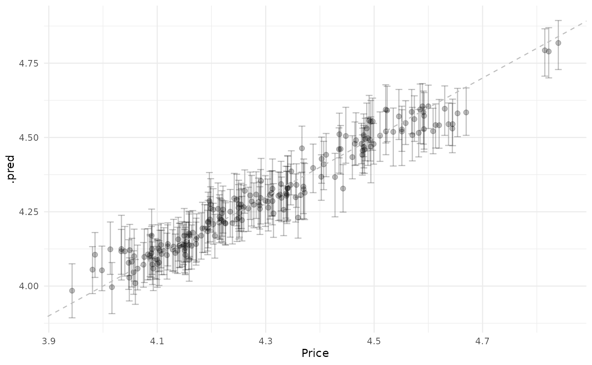
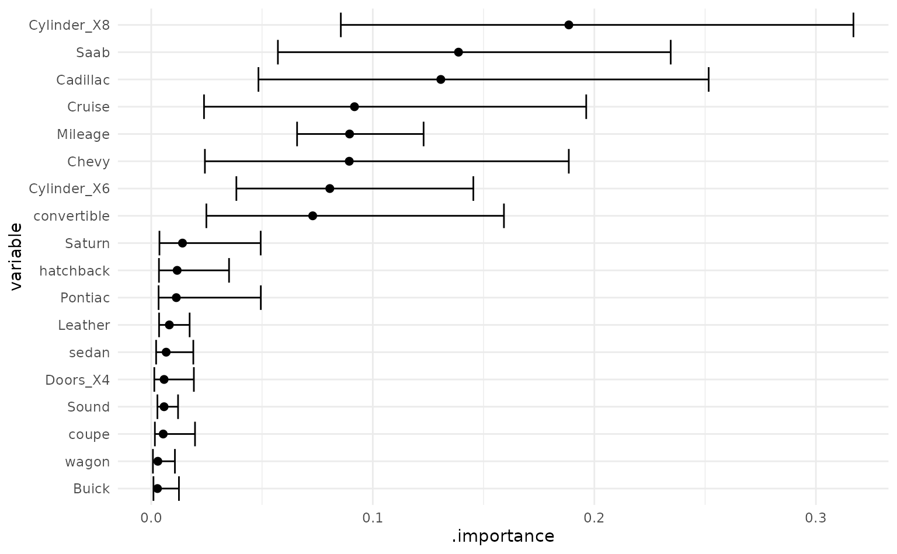

Getting Started with workboots
Source:vignettes/Getting-Started-with-workboots.Rmd
Getting-Started-with-workboots.RmdSometimes, we want a model that generates a range of possible outcomes around each prediction. Other times, we just care about point predictions and may be able to use a powerful model. workboots allows us to get the best of both worlds — getting a range of predictions while still using powerful model!
In this vignette, we’ll walk through the entire process of building a boosted tree model to predict the range of possible car prices from the modeldata::car_prices dataset. Prior to estimating ranges with workboots, we’ll need to build and tune a workflow. This vignette will walk through several steps:
- Building a baseline model with default parameters.
- Tuning and finalizing model parameters.
- Predicting price ranges with a tuned workflow.
- Estimating variable importance ranges with a tuned workflow.
Building a baseline model
What’s included in the car_prices dataset?
library(tidymodels)
# setup data
data("car_prices")
car_prices
#> # A tibble: 804 × 18
#> Price Mileage Cylinder Doors Cruise Sound Leather Buick Cadillac Chevy
#> <dbl> <int> <int> <int> <int> <int> <int> <int> <int> <int>
#> 1 22661. 20105 6 4 1 0 0 1 0 0
#> 2 21725. 13457 6 2 1 1 0 0 0 1
#> 3 29143. 31655 4 2 1 1 1 0 0 0
#> 4 30732. 22479 4 2 1 0 0 0 0 0
#> 5 33359. 17590 4 2 1 1 1 0 0 0
#> 6 30315. 23635 4 2 1 0 0 0 0 0
#> 7 33382. 17381 4 2 1 1 1 0 0 0
#> 8 30251. 27558 4 2 1 0 1 0 0 0
#> 9 30167. 25049 4 2 1 0 0 0 0 0
#> 10 27060. 17319 4 4 1 0 1 0 0 0
#> # … with 794 more rows, and 8 more variables: Pontiac <int>, Saab <int>,
#> # Saturn <int>, convertible <int>, coupe <int>, hatchback <int>, sedan <int>,
#> # wagon <int>The car_prices dataset is already well set-up for modeling — we’ll apply a bit of light preprocessing before training a boosted tree model to predict the price.
# apply global transfomations
car_prices <-
car_prices %>%
mutate(Price = log10(Price),
Cylinder = as.character(Cylinder),
Doors = as.character(Doors))
# split into testing and training
set.seed(999)
car_split <- initial_split(car_prices)
car_train <- training(car_split)
car_test <- testing(car_split)We’ll save the test data until the very end and use a validation split to evaluate our first model.
set.seed(888)
car_val_split <- initial_split(car_train)
car_val_train <- training(car_val_split)
car_val_test <- testing(car_val_split)How does an XGBoost model with default parameters perform on this dataset?
car_val_rec <-
recipe(Price ~ ., data = car_val_train) %>%
step_BoxCox(Mileage) %>%
step_dummy(all_nominal())
# fit and predict on our validation set
set.seed(777)
car_val_preds <-
workflow() %>%
add_recipe(car_val_rec) %>%
add_model(boost_tree("regression", engine = "xgboost")) %>%
fit(car_val_train) %>%
predict(car_val_test) %>%
bind_cols(car_val_test)
car_val_preds %>%
rmse(truth = Price, estimate = .pred)
#> # A tibble: 1 × 3
#> .metric .estimator .estimate
#> <chr> <chr> <dbl>
#> 1 rmse standard 0.0483We can also plot our predictions against the actual prices to see how the baseline model performs.
car_val_preds %>%
ggplot(aes(x = Price, y = .pred)) +
geom_point(size = 2, alpha = 0.25) +
geom_abline(linetype = "dashed")
We can extract a bit of extra performance by tuning the model parameters — this is also needed if we want to stray from the default parameters when predicting ranges with the workboots package.
Tuning model parameters
Boosted tree models have a lot of available tuning parameters — given our relatively small dataset, we’ll just focus on the mtry and trees parameters.
# re-setup recipe with training dataset
car_rec <-
recipe(Price ~ ., data = car_train) %>%
step_BoxCox(Mileage) %>%
step_dummy(all_nominal())
# setup model spec
car_spec <-
boost_tree(
mode = "regression",
engine = "xgboost",
mtry = tune(),
trees = tune()
)
# combine into workflow
car_wf <-
workflow() %>%
add_recipe(car_rec) %>%
add_model(car_spec)
# setup cross-validation folds
set.seed(666)
car_folds <- vfold_cv(car_train)
# tune model
set.seed(555)
car_tune <-
tune_grid(
car_wf,
car_folds,
grid = 5
)Tuning gives us slightly better performance than the baseline model:
car_tune %>%
show_best("rmse")
#> # A tibble: 5 × 8
#> mtry trees .metric .estimator mean n std_err .config
#> <int> <int> <chr> <chr> <dbl> <int> <dbl> <chr>
#> 1 5 1545 rmse standard 0.0446 10 0.00250 Preprocessor1_Model2
#> 2 12 1676 rmse standard 0.0452 10 0.00241 Preprocessor1_Model4
#> 3 4 434 rmse standard 0.0453 10 0.00247 Preprocessor1_Model1
#> 4 11 271 rmse standard 0.0458 10 0.00241 Preprocessor1_Model3
#> 5 18 1158 rmse standard 0.0468 10 0.00243 Preprocessor1_Model5Now we can finalize the workflow with the best tuning parameters. With this finalized workflow, we can start predicting intervals with workboots!
car_wf_final <-
car_wf %>%
finalize_workflow(car_tune %>% select_best("rmse"))
car_wf_final
#> ══ Workflow ════════════════════════════════════════════════════════════════════
#> Preprocessor: Recipe
#> Model: boost_tree()
#>
#> ── Preprocessor ────────────────────────────────────────────────────────────────
#> 2 Recipe Steps
#>
#> • step_BoxCox()
#> • step_dummy()
#>
#> ── Model ───────────────────────────────────────────────────────────────────────
#> Boosted Tree Model Specification (regression)
#>
#> Main Arguments:
#> mtry = 5
#> trees = 1545
#>
#> Computational engine: xgboostPredicting price ranges
To generate a prediction interval for each car’s price, we can pass the finalized workflow to predict_boots().
library(workboots)
set.seed(444)
car_preds <-
car_wf_final %>%
predict_boots(
n = 2000,
training_data = car_train,
new_data = car_test
)We can summarize the predictions with upper and lower bounds of a prediction interval by passing car_preds to summarise_predictions().
car_preds %>%
summarise_predictions()
#> # A tibble: 201 × 5
#> rowid .preds .pred .pred_lower .pred_upper
#> <int> <list> <dbl> <dbl> <dbl>
#> 1 1 <tibble [2,000 × 2]> 4.30 4.22 4.38
#> 2 2 <tibble [2,000 × 2]> 4.48 4.41 4.55
#> 3 3 <tibble [2,000 × 2]> 4.51 4.44 4.58
#> 4 4 <tibble [2,000 × 2]> 4.44 4.37 4.51
#> 5 5 <tibble [2,000 × 2]> 4.46 4.38 4.53
#> 6 6 <tibble [2,000 × 2]> 4.50 4.41 4.57
#> 7 7 <tibble [2,000 × 2]> 4.52 4.44 4.59
#> 8 8 <tibble [2,000 × 2]> 4.52 4.45 4.59
#> 9 9 <tibble [2,000 × 2]> 4.46 4.38 4.53
#> 10 10 <tibble [2,000 × 2]> 4.46 4.38 4.53
#> # … with 191 more rowsHow do our predictions compare against the actual values?
car_preds %>%
summarise_predictions() %>%
bind_cols(car_test) %>%
ggplot(aes(x = Price,
y = .pred,
ymin = .pred_lower,
ymax = .pred_upper)) +
geom_point(size = 2,
alpha = 0.25) +
geom_errorbar(alpha = 0.25,
width = 0.0125) +
geom_abline(linetype = "dashed",
color = "gray")
Estimating variable importance
With workboots, we can also estimate variable importance by passing the finalized workflow to vi_boots(). This uses vip::vi() under the hood, which doesn’t support all the model types that are available in tidymodels — please refer to vip’s package documentation for a full list of supported models.
Similar to predictions, we can summarise each variable’s importance by passing car_importance to the function summarise_importance() and plot the results.
car_importance %>%
summarise_importance() %>%
mutate(variable = forcats::fct_reorder(variable, .importance)) %>%
ggplot(aes(x = variable,
y = .importance,
ymin = .importance_lower,
ymax = .importance_upper)) +
geom_point(size = 2) +
geom_errorbar() +
coord_flip()